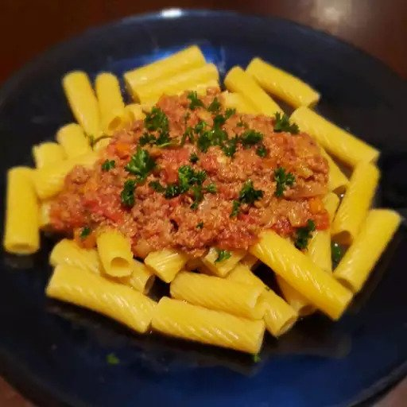

Bangin' Bolognese Sauce
Description
This is a bolognese sauce I learned about from an Australian Youtuber named Nat's What I Reckon. After utilizing and practicing with his recipe, I made small tweaks based on available ingredients in California.

Ingredients
- Pepper
- Spoonful of butter
- Dash of olive oil
- 2 sticks of celery
- 3 medium sized carrots or 1-2 large carrots
- 1-2 onions, with the type of onion being up to you. Personally, I like sweet yellow onions
- 200g of bacon
- 1.5kg of ground/mince beef
- 300g of tomato paste
- 500ml of chicken stock
- 1 bottle of cheap red wine (cabernet sauvignon or merlot).
- 250-ish ml of milk
- An amount of parmesean or pecorino cheese
- Lots of time
The Process
- Dice all your vegetables and toss them into a mixing bowl.
- Cut your bacon up into small pieces and add it into the same mixing bowl with your veggies.
- Throw your fats (butter and olive oil) into a big ol' pot on high heat, and add in your mixing bowl of diced up veggies and bacon.
- Keep it hot and stir, since we want all that bacon fat to add flavor.
- Add in the rest of your meat after you've started stirring up the veggies and bacon.
- Render out the fat from the beef and bacon.
- If you're following the recipe so far and using the same amounts of each ingredient, add in about half that bottle of wine.
- Let this cook and reduce the wine. We want the flavor of the wine, not the alcohol content.
- After the wine's reduced a bit, add in your tomato paste.
- Stir well to mix the tomato paste into your concoction.
- Once it's mixed well, add your milk and chicken stock.
- Stir to combine.
- Add in some pepper. We don't need to add salt yet, since the chicken stock is pretty salty already.
- Give it a good stir to make sure all the flavors are mixing together.
- Pop the lid on the pot, turn down the heat to low/medium-low, and let it ride. I usually cook mine for about 6 hours, adding chicken stock if the sauce thickens too much.
- After the time's up, go ahead and take the lid off and serve it on whatever you want. Pasta? Go for it. Rice? Let's do it.
- Remember how I said "an amount of parmesean or pecorino cheese" at the start? Add as much as you want. I don't care. I'm lactose-intolerant and I'll add at least 100 grams of cheese.
Wham, bam, thank you ma'am. You're done. That's everything you need for an absolutely bangin' bolognese. Big props to Nat for the base recipe.